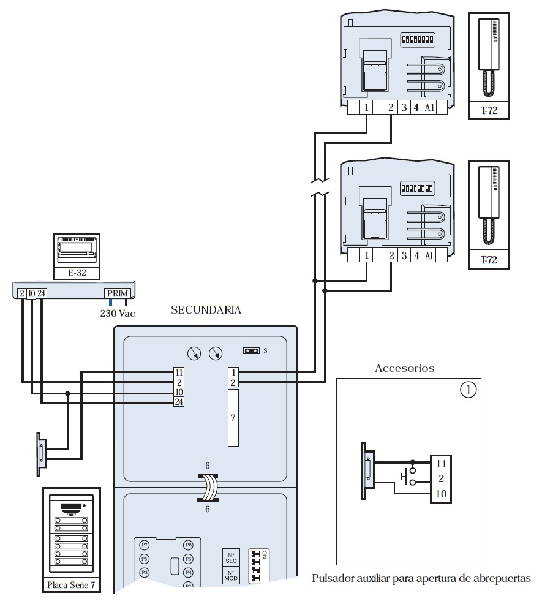

INTRODUCCIÓN
En esta sesión vas a conocer el sistema Bus de 2 hilos, muy utilizado en instalaciones modernas de porteros automáticos y videoporteros. Este sistema sustituye los múltiples hilos del sistema analógico por solo dos conductores, que transportan tanto la alimentación como la señal de comunicación.
Características principales del Bus 2 hilos:
- Utiliza solo 2 hilos para todo el sistema.
- Permite instalaciones más rápidas y ordenadas.
- Facilita ampliaciones (añadir viviendas o más telefonillos).
- Mejora la calidad del audio y la estabilidad del sistema.
- La identificación de cada vivienda se realiza mediante codificación (pequeños interruptores DIP o teclas de programación en el telefonillo).
Ventajas frente al sistema X+n
- Menos cable → menos errores de instalación.
- Más fácil de mantener.
- Compatible con videoporteros modernos.
- Ideal para reformas o sustituciones de instalaciones antiguas.
ESQUEMA DE BUS DIGITAL DE 2 HILOS
En los sistemas Bus de 2 hilos, toda la comunicación viaja por solo dos conductores, independientemente del número de viviendas. Los dos hilos del Bus transportan:
- Alimentación
- Audio
- Datos
- Señal de timbre
- Control de abrepuertas
Todo ello circulando por el mismo par de cables, gracias a la tecnología digital del fabricante (Fermax, Tegui, Guinaz, …).
Identificación de los dos hilos del Bus: Cada fabricante utiliza una codificación propia, pero siempre encontrarás dos bornes principales, normalmente etiquetados como:
BUS + (positivo del bus digital)
BUS – (negativo del bus digital)
o equivalentes:
B / B
D / D
L1 / L2
1 / 2
+ / –
Ambos hilos llegan a todos los dispositivos: placa de calle, alimentador, abrepuertas, terminales interiores, etc.
Funciones de cada hilo del Bus: Aunque solo hay dos hilos, cada uno tiene una función asociada dentro del sistema digital:
BUS + (positivo del Bus)
- Transporta parte de la alimentación.
- Lleva señal digital codificada: tono de llamada, audio, órdenes.
- Activa la comunicación entre placa y monitor.
BUS – (negativo del Bus)
- Actúa como retorno de la alimentación.
- Completa el circuito de datos digitales.
- Garantiza la estabilidad en la comunicación.

VIDEO DE APOYO
ACTIVIDAD
Crea una tabla comparativa donde indiques las diferencias entre: Sistema X+n hilos
Sistema Bus 2 hilos. Incluye al menos estos criterios:
- Número de hilos
- Complejidad del cableado
- Mantenimiento
- Velocidad de instalación
- Uso en instalaciones nuevas
Añade al final una breve conclusión personal: ¿Qué sistema te parece más sencillo y por qué?
Sube tu trabajo a Teams dentro del apartado Tabla comparativa Sistema X+n hilos/ Sistema Bus 2 hilos.
EVALUACIÓN
| Ítem a evaluar | Sí | No |
| Compara correctamente los dos sistemas | ☐ | ☐ |
| Incluye todos los criterios solicitados | ☐ | ☐ |
| La tabla es clara y comprensible | ☐ | ☐ |
| Añade una conclusión personal | ☐ | ☐ |
| Entrega dentro del plazo establecido | ☐ | ☐ |